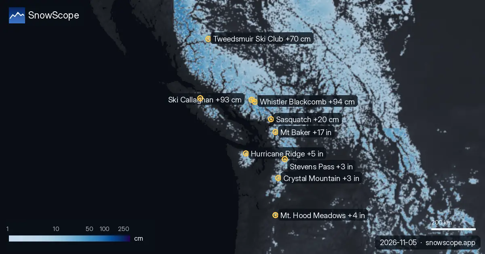

Gran Previsión de Nieve: 94 cm para Whistler Blackcomb para el domingo
Nuestro modelo SnowScope, ejecutado el jueves 5 de noviembre de 2026, pronostica nevadas significativas en varias regiones en las próximas 72 horas. Se espera que el oeste de Canadá vea la mayor cantidad de nieve nueva, con hasta 94 cm para el domingo.
Consulta la previsión de nieve en tiempo real de Whistler Blackcomb en la app SnowScopeEspesor de nieve, alertas de nieve polvo y mapa 3D, gratis.
Oeste de Canadá: Se esperan fuertes nevadas
Los mayores totales de nieve en las próximas 72 horas se esperan en el oeste de Canadá. Se pronostica que Whistler Blackcomb recibirá 94 cm de nieve nueva para el domingo 8 de noviembre de 2026. Ski Callaghan le sigue de cerca con una predicción de 93 cm de nieve nueva.
Tweedsmuir Ski Club también está preparado para nevadas sustanciales, con 70 cm esperados para el domingo. Para las próximas 24 horas, Tweedsmuir Ski Club lidera con 37 cm, seguido de Ski Callaghan con 32 cm y Whistler Blackcomb con 22 cm de nieve nueva.
| # | Estación | Región | +24 h | +72 h | Cota de nieve |
|---|---|---|---|---|---|
| 1 | Saas Grund | Alpes · Suiza | 14 cm | 21 cm | 2300 m |
| 2 | Grindelwald | Alpes · Suiza | 14 cm | 18 cm | 2000 m |
| 3 | Zermatt | Alpes · Italia / Suiza | 14 cm | 18 cm | 2400 m |
| 4 | Pescegallo | Alpes · Italia | 7 cm | 18 cm | 1600 m |
| 5 | La Grave | Alpes · Francia | 16 cm | 16 cm | 2900 m |
| 6 | Arolla | Alpes · Suiza | 14 cm | 16 cm | 2200 m |
| 7 | Engstligenalp | Alpes · Suiza | 14 cm | 16 cm | 2000 m |
| 8 | Glacier 3000 | Alpes · Suiza | 13 cm | 16 cm | 2200 m |
| # | Estación | Región | +24 h | +72 h | Cota de nieve |
|---|---|---|---|---|---|
| 1 | Mt Baker | Oeste de EE. UU. · Estados Unidos | 4 in (11 cm) | 17 in (42 cm) | 9200 ft (2800 m) |
| 2 | Hurricane Ridge | Oeste de EE. UU. · Estados Unidos | 1 in (2 cm) | 5 in (13 cm) | 9500 ft (2900 m) |
| 3 | Mt. Hood Meadows | Oeste de EE. UU. · Estados Unidos | 0 in (0 cm) | 4 in (9 cm) | 11.500 ft (3500 m) |
| 4 | Stevens Pass | Oeste de EE. UU. · Estados Unidos | 1 in (2 cm) | 3 in (7 cm) | 8900 ft (2700 m) |
| 5 | Crystal Mountain | Oeste de EE. UU. · Estados Unidos | 0 in (1 cm) | 3 in (7 cm) | 10.800 ft (3300 m) |
| 6 | Tuckerman Ravine | Noreste de EE. UU. · Estados Unidos | 0 in (0 cm) | 3 in (7 cm) | – |
| 7 | Sahalie Ski Club | Oeste de EE. UU. · Estados Unidos | 0 in (1 cm) | 2 in (6 cm) | 9200 ft (2800 m) |
| 8 | Saddleback Mountain | Noreste de EE. UU. · Estados Unidos | 0 in (0 cm) | 2 in (5 cm) | 10.800 ft (3300 m) |
| # | Estación | Región | +24 h | +72 h | Cota de nieve |
|---|---|---|---|---|---|
| 1 | Whistler Blackcomb | Oeste de Canadá · Canadá | 22 cm | 94 cm | 2400 m |
| 2 | Ski Callaghan | Oeste de Canadá · Canadá | 32 cm | 93 cm | 2200 m |
| 3 | Tweedsmuir Ski Club | Oeste de Canadá · Canadá | 37 cm | 70 cm | 1200 m |
| 4 | Mount Cain Alpine Park | Oeste de Canadá · Canadá | 8 cm | 54 cm | 2300 m |
| 5 | Sasquatch | Oeste de Canadá · Canadá | 1 cm | 20 cm | 2600 m |
| 6 | Mount Washington Alpine Resort | Oeste de Canadá · Canadá | 0 cm | 17 cm | 2800 m |
| 7 | Manning Park Resort | Oeste de Canadá · Canadá | 2 cm | 16 cm | 2700 m |
| 8 | Purden Ski Village | Oeste de Canadá · Canadá | 7 cm | 14 cm | 2500 m |

Alpes europeos: Nieve fresca para Suiza y Francia
En los Alpes europeos, se pronostica que varios centros turísticos suizos recibirán nieve fresca para el domingo 8 de noviembre de 2026. Se espera que Saas Grund reciba 21 cm, mientras que Grindelwald y Zermatt recibirán 18 cm de nieve nueva cada uno.
La Grave en Francia también espera 16 cm de nieve nueva para el domingo. La cota de nieve en los Alpes será generalmente alta, alrededor de 2000 a 2900 metros, lo que significa que la mejor nieve nueva estará en las pistas superiores.

Oeste de EE. UU.: Mt Baker lidera el pronóstico
El oeste de EE. UU. verá nieve nueva, y se pronostica que Mt Baker en el estado de Washington recibirá la mayor cantidad. Nuestro modelo predice 42 cm de nieve nueva para Mt Baker para el domingo 8 de noviembre de 2026. Se espera que Hurricane Ridge reciba 13 cm.
Otros centros turísticos como Mt. Hood Meadows, Stevens Pass y Crystal Mountain también recibirán cantidades menores de nieve nueva en las próximas 72 horas. La cota de nieve en el oeste de EE. UU. será bastante alta, entre 2700 y 3500 metros.
Consejos para esquiadores
- En el oeste de Canadá, concéntrate en las elevaciones más altas en Whistler Blackcomb, Ski Callaghan y Tweedsmuir Ski Club para la mejor nieve nueva, especialmente durante el fin de semana.
- Para los Alpes, dirígete a centros turísticos como Saas Grund, Grindelwald y Zermatt, pero recuerda que la cota de nieve será alta, por lo que las mejores condiciones estarán en las pistas superiores por encima de 2300 metros.
- En el oeste de EE. UU., Mt Baker ofrece las nevadas más prometedoras. Ten en cuenta que la cota de nieve es muy alta (por encima de 2800 metros), por lo que las condiciones de principios de temporada pueden significar poca nieve en las elevaciones más bajas.
- Consulta siempre el boletín oficial de avalanchas si planeas salir de pista, especialmente con nieve nueva cayendo sobre capas existentes.
Sobre estas cifras
Los espesores de nieve de las estaciones son la nieve más profunda en las pistas altas según el modelo de nieve de SnowScope (unos 1 km, cálculo del 5 de noviembre); son estimaciones para una zona, no una medida en un punto. Los valores de las estaciones de medida son medidas en la fecha indicada. Las previsiones pueden cambiar. Consulta siempre el boletín oficial de aludes antes de salir fuera de pista.
Boletines oficiales de aludes: EAWS (Europe) · avalanche.org (US) · Avalanche Canada
Citar este informe
Para investigación, docencia o prensa: cifras y gráficos reutilizables libremente bajo CC BY 4.0 con esta cita.
SnowScope (2026), Gran Previsión de Nieve: 94 cm para Whistler Blackcomb para el domingo, https://snowscope.app/blog/es/2026/11/where-most-snow-falls-next-72-hours-5-november-2026.html, consultado el 2026-11-05
SnowScope (Atlas Labs). (2026, November 5). Gran Previsión de Nieve: 94 cm para Whistler Blackcomb para el domingo. SnowScope snow reports. https://snowscope.app/blog/es/2026/11/where-most-snow-falls-next-72-hours-5-november-2026.html
BibTeX
@misc{snowscope2026wheremostsnowfallsnext72,
author = {{SnowScope (Atlas Labs)}},
title = {Gran Previsión de Nieve: 94 cm para Whistler Blackcomb para el domingo},
year = {2026},
month = nov,
howpublished = {\url{https://snowscope.app/blog/es/2026/11/where-most-snow-falls-next-72-hours-5-november-2026.html}},
note = {Published 2026-11-05 10:27 UTC; accessed 2026-11-05}
}· CC BY 4.0 · Métodos, datos y herramientas →
Whistler Blackcomb: nieve y temperatura según la altura, este invierno vs el pasado (herramientas) →
Sigue Whistler Blackcomb
Gratis: un aviso cuando llega la nieve y la previsión cada mañana.
Más partes de nieve

Hasta el 8 de noviembre, nuestra previsión da 94 cm en Whistler Blackcomb, 93 cm en Ski Callaghan y 70 cm en Tweedsmuir Ski Club. Las cifras de las …

Nuestra tabla diaria de las estaciones con más nieve nueva prevista en las próximas 24 horas y hasta el 12 de noviembre, en Europa, Marruecos y …

Hasta el 8 de noviembre, nuestra previsión da 17 in (42 cm) en Mt Baker y 5 in (13 cm) en Hurricane Ridge. Las cifras de las estaciones de esquí son …